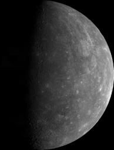
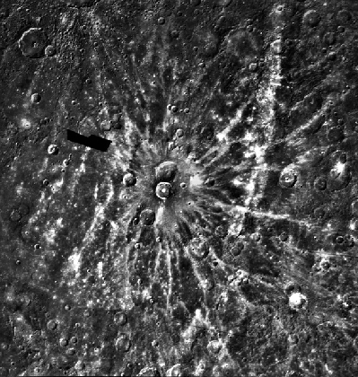
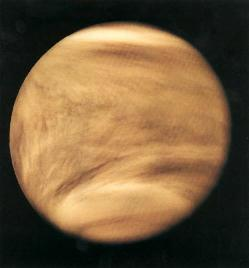
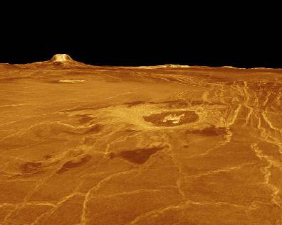
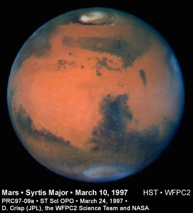
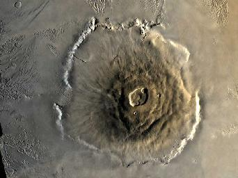
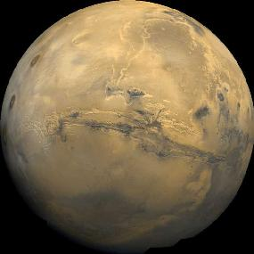
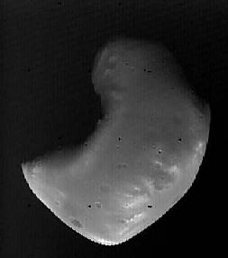
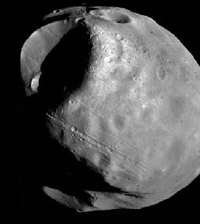

| Diameter (Earth=1) | Mass ratio (Earth=1) | Density (Water=1) | Revolution period | Sidereal rotation period | No. of satellites | |
| Mercury | 0.38 | 0.06 | 5.4 | 88 days | 59 days | 0 |
| Venus | 0.95 | 0.82 | 5.2 | 224 days | 243 days | 0 |
| Earth | 1 | 1 | 5.5 | 365 days | 24 hours | 1 |
| Mars | 0.53 | 0.11 | 3.9 | 687 days | 25 hours | 2 |
 | |
| Courtesy JPL/NASA. |
One of the most impressive surface features of Mercury is its
full of craters. Most of them were formed by the
impacts of meteorites. Impact craters have some special features,
for example, there are some ray systems and central mountains.
 |
| Courtesy NASA. |
 | |
| Courtesy NASA. |
Venus has a thick atmosphere. The pressure is 90 times that of the Earth. The atmosphere consists of 90% of CO2 , 3% of N2 , and some SO2 . The whole planet is completely covered by clouds made up of sulphuric acid (H2SO4). As a result, the rain in Venus is acidic.
Due to the presence of so much carbon dioxide in its atmosphere, there is a serious green house effect, which traps heat from the Sun. The surface temperature of Venus is very high, almost 500°C. Moreover, the surface temperature is almost the same everywhere. Acid rain dissolves the carbonate and sulphate in rocks to produce more CO2 and SO2 , leading to further corrosion and green house effect.
Unlike Mercury, there are fewer craters. This is due to the
protection by the thick atmosphere.
 |
| Courtesy JPL/NASA. |
 | |
| Courtesy STScI. |
There is a thin layer of atmosphere on Mars. The pressure is only 1% that of Earth. The chemical composition is mainly carbon dioxide (95%) and nitrogen (3%). Clouds can be observed on Mars. Some are white, which are made up of water vapor and carbon dioxide. Some clouds are yellowish, which are made of dust. Although the atmosphere consists mainly of carbon dioxide, it is too thin to trap heat. So, the surface temperature varies enormously, from -100°C to -10°C. Moreover, owing to the long distance from the Sun, the temperature is quite low on average.
The atmospheric chemical composition of Mars and Venus are very similar. Actually, in the early stage of our solar system, the atmospheres of the Earth, Venus and Mars consisted of volcanic gases like carbon dioxide and water vapor. It means at that time, there were active volcanic activities. On Earth, the amount of carbon dioxide is greatly reduced by dissolving in water, by photosynthesis, etc. These processes do not take place in Venus and Mars.
The surface of Mars is red in color. This is because of the
rich iron oxide present on the surface. Besides, Mars possesses
polar ice caps like Earth. They are made up of carbon dioxide
and water.
 |
| Courtesy NASA. |
There are some remarkable surface features on Mars. First, there are the volcanoes, which are usually higher than those on Earth. The Olympus Mounts, the largest volcano in the solar system, rises 25km above the surface (three times the height of Mt. Everest) and is 600km in diameter. However, there is no active volcanic system on Mars. Unlike the Earth, the large number of volcanic features on Mars is due to the absence of continental drift.
Another surface feature is canyons. The largest one is 5000km long, 200km wide and 7km deep (about 4.4 times the depth of Grand Canyon).
 |
| Courtesy NASA. |
As mentioned, Mars has no continental drift like Earth. This can be seen by the absence of long mountain ranges on Mars.
Mars has two small satellites. Even the larger one is no more than 13 km in radius. Unlike the Moon, they are not round in shape.
 |
 | |
| Courtesy NASA. | Courtesy NASA. |